산업보건지도사 (2022-03-19 기출문제)
1과목: 산업안전보건법령
1. 산업안전보건법령상 관계수급인 근로자가 도급인의 사업장에서 작업을 하는 경우 도급인의 안전조치 및 보건조치에 관한 설명으로 옳지 않은 것은?
- 도급인은 같은 장소에서 이루어지는 도급인과 관계수급인의 작업에 있어서 관계 수급인의 작업시기ㆍ내용, 안전조치 및 보건조치 등을 확인하여야 한다.
- 건설업의 경우에는 도급사업의 정기 안전ㆍ보건 점검을 분기에 1회 이상 실시하여야 한다.
- 관계수급인의 공사금액을 포함한 해당 공사의 총공사금액이 20억원 이상인 건설업의 경우 도급인은 그 사업장의 안전보건관리책임자를 안전보건총괄책임자로 지정하여야 한다.
- 도급인은 도급인과 수급인을 구성원으로 하는 안전 및 보건에 관한 협의체를 도급인 및 그의 수급인 전원으로 구성하여야 한다.
- 도급인은 제조업 작업장의 순회점검을 2일에 1회 이상 실시하여야 한다.
(정답률: 알수없음)

2. 산업안전보건법령상 ‘대여자 등이 안전조치 등을 해야 하는 기계ㆍ기구ㆍ설비 및 건축물 등’에 규정되어 있는 것을 모두 고른 것은? (단, 고용노동부장관이 정하여 고시하는 기계ㆍ기구ㆍ설비 및 건축물 등은 고려하지 않음)
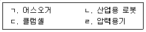
- ㄱ, ㄴ
- ㄱ, ㄷ
- ㄴ, ㄹ
- ㄱ, ㄷ, ㄹ
- ㄴ, ㄷ, ㄹ
(정답률: 알수없음)
3. 산업안전보건법령상 유해하거나 위험한 기계ㆍ기구에 대한 방호조치 등에 관한 설명으로 옳은 것을 모두 고른 것은?
- ㄱ
- ㄱ, ㄴ
- ㄴ, ㄷ
- ㄷ, ㄹ
- ㄱ, ㄷ, ㄹ
(정답률: 알수없음)
4. 산업안전보건법령상 사업주가 근로자의 작업내용을 변경할 때에 그 근로자에게 하여야 하는 안전보건교육의 내용으로 규정되어 있지 않은 것은?
- 사고 발생 시 긴급조치에 관한 사항
- 기계ㆍ기구의 위험성과 작업의 순서 및 동선에 관한 사항
- 표준안전 작업방법에 관한 사항
- 직장 내 괴롭힘, 고객의 폭언 등으로 인한 건강장해 예방 및 관리에 관한 사항
- 작업 개시 전 점검에 관한 사항
(정답률: 알수없음)
5. 산업안전보건법령상 안전검사에 관한 설명으로 옳지 않은 것은?
- 형 체결력(型締結力) 294킬로뉴턴(KN) 이상의 사출성형기는 안전검사대상기계 등에 해당한다.
- 사업주는 자율안전검사를 받은 경우에는 그 결과를 기록하여 보존하여야 한다.
- 안전검사기관이 안전검사 업무를 게을리하거나 업무에 차질을 일으킨 경우 고용노동부장관은 안전검사기관 지정을 취소하거나 6개월 이내의 기간을 정하여 그 업무의 정지를 명할 수 있다.
- 곤돌라를 건설현장에서 사용하는 경우 사업장에 최초로 설치한 날부터 6개월 마다 안전검사를 하여야 한다.
- 안전검사대상기계등을 사용하는 사업주와 소유자가 다른 경우에는 사업주가 안전검사를 받아야 한다.
(정답률: 알수없음)
6. 산업안전보건법령상 제조 또는 사용허가를 받아야 하는 유해물질을 모두 고른 것은? (단, 고용노동부장관의 승인을 받은 경우는 제외함)
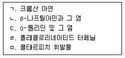
- ㄱ, ㄴ, ㄷ
- ㄱ, ㄷ, ㅁ
- ㄱ, ㄹ, ㅁ
- ㄴ, ㄷ, ㄹ
- ㄴ, ㄹ, ㅁ
(정답률: 알수없음)
7. 산업안전보건법령상 중대재해에 속하는 경우를 모두 고른 것은?
- ㄱ
- ㄴ, ㄷ
- ㄷ, ㄹ
- ㄱ, ㄴ, ㄹ
- ㄱ, ㄴ, ㄷ, ㄹ
(정답률: 알수없음)
8. 산업안전보건법령상 안전인증에 관한 설명으로 옳은 것은?
- 안전인증 심사 중 유해ㆍ위험기계등이 서면심사 내용과 일치하는지와 유해ㆍ위험기계등의 안전에 관한 성능이 안전인증기준에 적합한지에 대한 심사는 기술능력 및 생산체계 심사에 해당한다.
- 거짓이나 그 밖의 부정한 방법으로 안전인증을 받은 사유로 안전인증이 취소된 자는 안전인증이 취소된 날부터 3년 이내에는 취소된 유해ㆍ위험기계등에 대하여 안전인증을 신청할 수 없다.
- 크레인, 리프트, 곤돌라는 설치ㆍ이전하는 경우뿐만 아니라 주요 구조 부분을 변경하는 경우에도 안전인증을 받아야 한다.
- 안전인증기관은 안전인증을 받은 자가 최근 2년 동안 안전인증표시의 사용금지를 받은 사실이 없는 경우에는 안전인증기준을 지키고 있는지를 3년에 1회이상 확인해야 한다.
- 안전인증대상기계등이 아닌 유해ㆍ위험기계등을 제조하는 자는 그 유해ㆍ위험 기계등의 안전에 관한 성능을 평가받기 위하여 고용노동부장관에게 안전인증을 신청할 수 없다.
(정답률: 알수없음)
9. 산업안전보건법령상 상시근로자 1000명인 A회사(「상법」제170조에 따른 주식회사)의 대표이사 甲이 수립해야 하는 회사의 안전 및 보건에 관한 계획에 포함되어야 하는 내용이 아닌 것은?
- 안전 및 보건에 관한 경영방침
- 안전ㆍ보건관리 업무 위탁에 관한 사항
- 안전ㆍ보건관리 조직의 구성ㆍ인원 및 역할
- 안전ㆍ보건 관련 예산 및 시설 현황
- 안전 및 보건에 관한 전년도 활동실적 및 다음 연도 활동계획
(정답률: 알수없음)
10. 산업안전보건법령상 안전관리전문기관에 대해 그 지정을 취소하여야 하는 경우는?
- 업무정지 기간 중에 업무를 수행한 경우
- 안전관리 업무 관련 서류를 거짓으로 작성한 경우
- 정당한 사유 없이 안전관리 업무의 수탁을 거부한 경우
- 안전관리 업무 수행과 관련한 대가 외에 금품을 받은 경우
- 법에 따른 관계 공무원의 지도ㆍ감독을 거부ㆍ방해 또는 기피한 경우
(정답률: 알수없음)
11. 산업안전보건법령상 통합공표 대상 사업장 등에 관한 내용이다. ( )에 들어갈 사업으로 옳지 않은 것은?
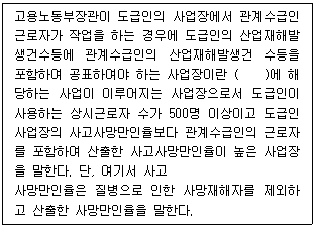
- 제조업
- 철도운송업
- 도시철도운송업
- 도시가스업
- 전기업
(정답률: 알수없음)
12. 산업안전보건법령상 자율안전확인의 신고에 관한 설명으로 옳지 않은 것은?
- 자율안전확인대상기계등을 제조하는 자가「산업표준화법」제15조에 따른 인증을 받은 경우 고용노동부장관은 자율안전확인신고를 면제할 수 있다.
- 산업용 로봇, 혼합기, 파쇄기, 컨베이어는 자율안전확인대상기계등에 해당한다.
- 자율안전확인대상기계등을 수입하는 자로서 자율안전확인신고를 하여야 하는 자는 수입하기 전에 신고서에 제품의 설명서, 자율안전확인대상기계등의 자율안전기준을 충족함을 증명하는 서류를 첨부하여 한국산업안전보건공단에 제출해야 한다.
- 자율안전확인의 표시를 하는 경우 인체에 상해를 입힐 우려가 있는 재질이나 표면이 거친 재질을 사용해서는 안 된다.
- 고용노동부장관은 신고된 자율안전확인대상기계등의 안전에 관한 성능이 자율안전기준에 맞지 아니하게 된 경우 신고한 자에게 1년 이내의 기간을 정하여 자율안전기준에 맞게 시정하도록 명할 수 있다.
(정답률: 알수없음)
13. 산업안전보건법령상 공정안전보고서에 포함되어야 하는 사항을 모두 고른 것은?
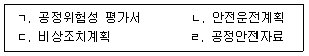
- ㄱ
- ㄴ, ㄹ
- ㄷ, ㄹ
- ㄱ, ㄴ, ㄷ
- ㄱ, ㄴ, ㄷ, ㄹ
(정답률: 알수없음)
14. 산업안전보건법령상 사업장의 상시근로자 수가 50명인 경우에 산업안전보건위원회를 구성해야 할 사업은?
- 컴퓨터 프로그래밍, 시스템 통합 및 관리업
- 소프트웨어 개발 및 공급업
- 비금속 광물제품 제조업
- 정보서비스업
- 금융 및 보험업
(정답률: 알수없음)
15. 산업안전보건법령상 사업주가 관리감독자에게 수행하게 하여야 하는 산업안전 및 보건에 관한 업무로 명시되지 않은 것은?
- 산업재해에 관한 통계의 기록 및 유지에 관한 사항
- 사업장 내 관리감독자가 지휘ㆍ감독하는 작업과 관련된 기계ㆍ기구 또는 설비의 안전ㆍ보건 점검 및 이상 유무의 확인
- 관리감독자에게 소속된 근로자의 작업복ㆍ보호구 및 방호장치의 점검과 그 착용ㆍ사용에 관한 교육ㆍ지도
- 해당작업에서 발생한 산업재해에 관한 보고 및 이에 대한 응급조치
- 해당작업의 작업장 정리ㆍ정돈 및 통로 확보에 대한 확인ㆍ감독
(정답률: 알수없음)
16. 산업안전보건법령상 도급승인 대상 작업에 관한 것으로 “급성 독성, 피부부식성 등이 있는 물질의 취급 등 대통령령으로 정하는 작업”에 관한 내용이다. ( )에 들어갈 내용을 순서대로 옳게 나열한 것은?
- ㄱ: 1, ㄴ: 고용노동부장관, ㄷ: 산업재해보상보험및예방심의위원회
- ㄱ: 1, ㄴ: 한국산업안전보건공단 이사장, ㄷ: 산업재해보상보험및예방심의위원회
- ㄱ: 2, ㄴ: 고용노동부장관, ㄷ: 산업재해보상보험및예방심의위원회
- ㄱ: 2, ㄴ: 지방고용노동관서의 장, ㄷ: 산업안전보건심의위원회
- ㄱ: 3, ㄴ: 고용노동부장관, ㄷ: 산업안전보건심의위원회
(정답률: 알수없음)
17. 산업안전보건법령상 보건관리자에 관한 설명으로 옳지 않은 것은?
- 상시근로자 300명 이상을 사용하는 사업장의 사업주는 보건관리자에게 그 업무만을 전담하도록 하여야 한다.
- 안전인증대상기계등과 자율안전확인대상기계등 중 보건과 관련된 보호구(保護具) 구입 시 적격품 선정에 관한 보좌 및 지도ㆍ조언은 보건관리자의 업무에 해당한다.
- 외딴곳으로서 고용노동부장관이 정하는 지역에 있는 사업장의 사업주는 보건관리전문기관에 보건관리자의 업무를 위탁할 수 있다.
- 보건관리자의 업무를 위탁할 수 있는 보건관리전문기관은 지역별 보건관리전문기관과 업종별ㆍ유해인자별 보건관리전문기관으로 구분한다.
- 「의료법」에 따른 간호사는 보건관리자가 될 수 없다.
(정답률: 알수없음)
18. 산업안전보건법령상 안전보건관리규정(이하 “규정”이라 함)에 관한 설명으로 옳은 것은?
- 안전 및 보건에 관한 관리조직은 규정에 포함되어야 하는 사항이 아니다.
- 규정 중 취업규칙에 반하는 부분에 관하여는 규정으로 정한 기준이 취업규칙에 우선하여 적용된다.
- 산업안전보건위원회가 설치되어 있지 아니한 사업장의 사업주가 규정을 작성할 때에는 지방고용노동관서의 장의 승인을 받아야 한다.
- 사업주가 규정을 작성할 때에는 산업안전보건위원회의 심의ㆍ의결을 거쳐야 하나, 변경할 때에는 심의만 거치면 된다.
- 규정을 작성해야 하는 사업의 사업주는 규정을 작성해야 할 사유가 발생한 날부터 30일 이내에 작성해야 한다.
(정답률: 알수없음)
19. 산업안전보건법령상 고용노동부장관이 안전관리전문기관 또는 보건관리전문기관의 지정을 취소하거나 6개월 이내의 기간을 정하여 그 업무의 정지를 명할 수 있도록 하는 규정이 준용되는 기관이 아닌 것은?
- 안전보건교육기관
- 안전보건진단기관
- 건설재해예방전문지도기관
- 역학조사 실시 업무를 위탁받은 기관
- 석면조사기관
(정답률: 알수없음)
20. 산업안전보건법령상 사업주가 작업환경측정을 할 때 지켜야 할 사항으로 옳은 것을 모두 고른 것은?
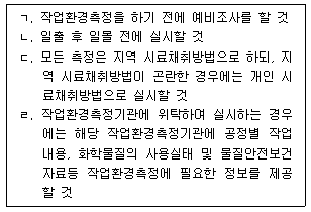
- ㄱ, ㄹ
- ㄴ, ㄷ
- ㄷ, ㄹ
- ㄱ, ㄴ, ㄹ
- ㄱ, ㄴ, ㄷ, ㄹ
(정답률: 알수없음)
21. 산업안전보건법령상 같은 유해인자에 노출되는 근로자들에게 유사한 질병의 증상이 발생한 경우에 고용노동부장관은 근로자의 건강을 보호하기 위하여 사업주에게 특정 근로자에 대해 건강진단을 실시할 것을 명할 수 있다. 이에 해당하는 건강진단은?
- 일반건강진단
- 특수건강진단
- 배치전건강진단
- 임시건강진단
- 수시건강진단
(정답률: 알수없음)
22. 산업안전보건법령상 유해성ㆍ위험성 조사 제외 화학물질로 규정되어 있지 않은 것은? (단, 고용노동부장관이 공표하거나 고시하는 물질은 고려하지 않음)
- 「의료기기법」제2조제1항에 따른 의료기기
- 「약사법」제2조제4호 및 제7호에 따른 의약품 및 의약외품(醫藥外品)
- 「건강기능식품에 관한 법률」제3조제1호에 따른 건강기능식품
- 「첨단재생의료 및 첨단바이오의약품 안전 및 지원에 관한 법률」제2조제5호에 따른 첨단바이오의약품
- 천연으로 산출된 화학물질
(정답률: 알수없음)
23. 산업안전보건법령상 작업환경측정 또는 건강진단의 실시 결과만으로 직업성 질환에 걸렸는지를 판단하기 곤란한 근로자의 질병에 대하여 한국산업안전보건공단에 역학조사를 요청할 수 있는 자로 규정되어 있지 않은 자는?
- 사업주
- 근로자대표
- 보건관리자
- 건강진단기관의 의사
- 산업안전보건위원회의 위원장
(정답률: 알수없음)
24. 산업안전보건법령상 징역 또는 벌금에 처해질 수 있는 자는?
- 작업환경측정 결과를 해당 작업장 근로자에게 알리지 아니한 사업주
- 등록하지 아니하고 타워크레인을 설치ㆍ해체한 자
- 석면이 포함된 건축물이나 설비를 철거하거나 해체하면서 고용노동부령으로 정하는 석면해체ㆍ제거의 작업기준을 준수하지 아니한 자
- 역학조사 참석이 허용된 사람의 역학조사 참석을 방해한 자
- 물질안전보건자료대상물질을 양도하면서 이를 양도받는 자에게 물질안전보건 자료를 제공하지 아니한 자
(정답률: 알수없음)
25. 산업안전보건법령상 근로의 금지 및 제한에 관한 설명으로 옳은 것은?
- 사업주가 잠수 작업에 종사하는 근로자에게 1일 6시간, 1주 36시간 근로하게하는 것은 허용된다.
- 사업주는 알코올중독의 질병이 있는 근로자를 고기압 업무에 종사하도록 해서는 안 된다.
- 사업주가 조현병에 걸린 사람에 대해 근로를 금지하는 경우에는 미리 보건관리자(의사가 아닌 보건관리자 포함), 산업보건의 또는 건강검진을 실시한 의사의 의견을 들어야 한다.
- 사업주는 마비성 치매에 걸릴 우려가 있는 사람에 대해 근로를 금지해야 한다.
- 사업주는 전염될 우려가 있는 질병에 걸린 사람이 있는 경우 전염을 예방하기 위한 조치를 한 후에도 그 사람의 근로를 금지해야 한다.
(정답률: 알수없음)
2과목: 산업보건일반
26. 산업위생 활동에 관한 내용으로 옳은 것은?
- 관리의 최우선순위는 보호구 착용이다.
- 인지(인식)란 현재 상황에서 존재 또는 잠재하고 있는 유해인자의 파악이다.
- 유해인자에 대한 평가는 특수건강진단의 결과만을 사용한다.
- 처음으로 요구되는 것은 근로자 건강진단이다.
- 사업장 근로자만의 건강을 보호하는 것이다.
(정답률: 알수없음)
27. 다음에서 설명하고 있는 가스크로마토그래피 검출기는?
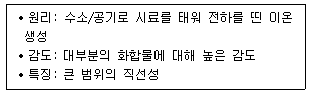
- 질소인검출기(NPD)
- 전자포획검출기(ECD)
- 열전도도검출기(TCD)
- 불꽃광도검출기(FPD)
- 불꽃이온화검출기(FID)
(정답률: 알수없음)
28. 작업환경측정에 관한 내용으로 옳지 않은 것은?
- 단위작업 장소에서 11명이 작업할 때 시료 채취 수는 3개 이상이다.
- 산화아연 분진은 호흡성 분진을 채취할 수 있는 여과채취방법으로 측정한다.
- 시료채취 시에는 예상되는 측정대상물질의 농도, 방해물, 시료채취 시간 등을 종합적으로 고려한다.
- 불화수소의 경우 최고노출기준(Ceiling)과 시간가중평균노출기준(TWA)에 대하여 병행 측정한다.
- 관리대상 유해물질의 취급 장소가 실내인 경우 공기의 최대부피를 120세제곱미터로 하여 허용소비량 초과여부를 판단한다.
(정답률: 알수없음)
29. 다음은 도장 작업자들을 대상으로 한 벤젠(노출기준 0.5 ppm)의 작업환경측정 결과이다. 노출기준을 초과할 확률은 약 얼마인가? (단, 정규분포곡선의 z값에 따른 확률은 다음 표와 같다.)
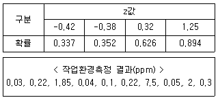
- 0.663
- 0.374
- 0.337
- 0.147
- 0.106
(정답률: 알수없음)
30. 화학물질 및 물리적 인자의 노출기준에 관한 설명으로 옳지 않은 것은?
- 발암성, 생식세포 변이원성 및 생식독성 정보는 산업안전보건법상 규제 목적으로 표시한다.
- 내화성세라믹섬유의 노출기준 표시단위는 세제곱센티미터당 개수(개/cm3)를 사용한다.
- 노출기준은 작업장의 유해인자에 대한 작업환경개선기준과 작업환경측정결과의 평가기준으로 사용할 수 있다.
- “최고노출기준(C)”이란 근로자가 1일 작업시간동안 잠시라도 노출되어서는 아니 되는 기준을 말하며, 노출기준 앞에 “C”를 붙여 표시한다.
- 혼재하는 물질 간에 유해성이 인체의 서로 다른 부위에 유해작용을 하는 경우, 혼재하는 물질 중 어느 한 가지라도 노출기준을 넘을 때는 노출기준을 초과하는 것으로 한다.
(정답률: 알수없음)
31. ACGIH에서 권고하고 있는 유해물질과 기준(TLV) 설정 근거가 된 건강영향의 연결로 옳지 않은 것은?
- 벤젠(TWA 0.5 ppm, STEL 2.5 ppm): 백혈병
- 카본블랙(TWA 3 mg/m3): 기관지염
- 톨루엔(TWA 20 ppm): 혈액학적 악영향
- 이산화탄소(TWA 5,000 ppm, STEL 30,000 ppm): 질식
- 노말-헥산(TWA 50 ppm): 중추신경계 손상, 말초신경염, 눈 염증
(정답률: 알수없음)
32. 60℃, 1기압인 탈지조에서 TCE(분자량 131.4, 비중 1.466) 2L를 사용하였다. 공기 중으로 모두 증발하였다고 가정할 때, 발생한 증기량(m3)은 약 얼마인가?
- 0.34
- 0.50
- 0.54
- 0.61
- 0.82
(정답률: 알수없음)
33. 국소배기장치 설계에 관한 설명으로 옳지 않은 것은?
- 송풍기에서 가장 먼 쪽의 후드부터 설계한다.
- 설계 시 먼저 후드의 형식과 송풍량을 결정한다.
- 1차 계산된 덕트 직경의 이론치보다 더 큰 크기의 시판 덕트를 선정한다.
- 합류관 연결부에서 정압은 가능한 같아지게 한다.
- 합류관 연결부의 정압비(SPhigh/SPlow)가 1.⑤ 이내이면 정압 차를 무시하고 다음단계 설계를 계속한다.
(정답률: 알수없음)
34. 입자상 물질에 관한 설명으로 옳은 것을 모두 고른 것은?
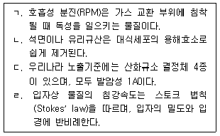
- ㄱ, ㄴ
- ㄱ, ㄷ
- ㄴ, ㄹ
- ㄴ, ㄷ, ㄹ
- ㄱ, ㄴ, ㄷ, ㄹ
(정답률: 알수없음)
35. 화학물질 및 물리적 인자의 노출기준에서 “발암성 1A”가 아닌 중금속은?
- 비소 및 그 무기화합물
- 니켈(가용성 화합물)
- 니켈(불용성 무기화합물)
- 수은 및 무기형태(아릴 및 알킬 화합물 제외)
- 카드뮴 및 그 화합물
(정답률: 알수없음)
36. 물리적 유해인자의 관리방법으로 옳지 않은 것은?
- 고압환경에서는 질소 대신 헬륨으로 대치한 공기를 흡입한다.
- 고온순화(순응)는 노출 후 4∼7일부터 시작하여 12～14일에 완성된다.
- 자유공간(점음원)에서 거리가 2배 증가하면 소음은 6 dB 감소한다.
- 진동공구 작업자는 금연하는 것이 바람직하다.
- 전리방사선의 강도는 거리의 제곱근에 반비례한다.
(정답률: 알수없음)
37. 다음 조건을 고려하여 공기 중 섬유상물질의 농도(개/cm3)를 구하면 약 얼마인가?
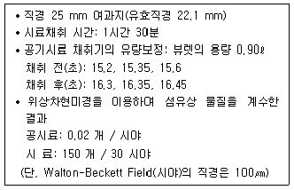
- 0.2
- 0.4
- 0.6
- 0.8
- 1.0
(정답률: 알수없음)
38. 실험실로 I-131(반감기 8.04일)이 들어있는 보관함이 배달되었으며, 방사능을 측정한 결과 500 pCi 였다. 30일 후 방사능(pCi)은 약 얼마인가?
- 37.6
- 32.6
- 27.6
- 22.6
- 17.6
(정답률: 알수없음)
39. 개인보호구에 관한 설명으로 옳은 것을 모두 고른 것은?
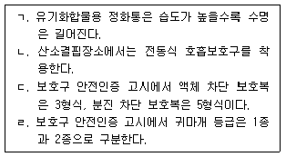
- ㄱ, ㄴ
- ㄷ, ㄹ
- ㄱ, ㄷ, ㄹ
- ㄴ, ㄷ, ㄹ
- ㄱ, ㄴ, ㄷ, ㄹ
(정답률: 알수없음)
40. 톨루엔 노출 작업자의 호흡보호구에 적합한 정성적 밀착도 검사(QLFT) 방법은?
- 초산이소아밀법
- 사카린법
- 자극성 스모그법
- 공기 중 에어로졸법(Condensation Nucleus Counter)
- 통제음압모니터법(Controlled Negative-Pressure Monitor)
(정답률: 알수없음)
41. 산업안전보건기준에 관한 규칙에서 밀폐공간과 관련된 용어의 정의로 옳지 않은 것은?
- “밀폐공간”이란 산소결핍, 유해가스로 인한 질식ㆍ화재ㆍ폭발 등의 위험이 있는 장소이다.
- “유해가스”란 탄산가스ㆍ일산화탄소ㆍ황화수소 등의 기체로서 인체에 유해한 영향을 미치는 물질을 말한다.
- “적정공기”란 산소농도의 범위가 18퍼센트 이상 23.5퍼센트 미만, 탄산가스의 농도가 1.5퍼센트 미만, 일산화탄소의 농도가 30피피엠 미만, 황화수소의 농도가 10피피엠 미만인 수준의 공기를 말한다.
- “산소결핍”이란 공기 중의 산소농도가 18퍼센트 이하인 상태를 말한다.
- “산소결핍증”이란 산소가 결핍된 공기를 들이마심으로써 생기는 증상을 말한다.
(정답률: 알수없음)
42. 유해화학물질 또는 공정에 적합한 호흡보호구의 연결이 옳지 않은 것은?
- 석면: 특급 방진마스크
- 스프레이 도장작업: 방진방독 겸용 마스크
- 베릴륨: 1급 방진마스크
- 포스겐: 송기마스크
- 금속흄: 배기밸브가 있는 안면부여과식 마스크
(정답률: 알수없음)
43. 고용노동부가 발표한 2020년 산업재해 현황 분석에서, 2020년에 발생한 직업병 중 발생자 수가 가장 많은 것은?
- 진폐
- 난청
- 금속 및 중금속 중독
- 유기화합물 중독
- 기타 화학물질 중독
(정답률: 알수없음)
44. 호흡기계의 구조와 기능에 관한 설명으로 옳지 않은 것은?
- 폐포는 가스교환 작용이 일어나는 곳이다.
- 해부학적으로 상부와 하부 호흡기계로 구분한다.
- 내호흡은 폐포와 혈액 사이에서 발생하는 산소와 이산화탄소의 교환작용을 말한다.
- 비강(nasal cavity)은 호흡공기의 온ㆍ습도를 조절하고 오염물질을 제거하는 등의 기능을 한다.
- 기관지는 세기관지(bronchiole)에 가까울수록 섬모세포의 수는 줄어들고 섬모가 없는 클라라세포(clara cell)가 주종을 이룬다.
(정답률: 알수없음)
45. 메탄올의 생체 내 대사과정 중 ( )에 들어갈 내용으로 옳은 것은?
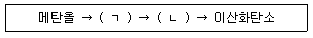
- ㄱ: 포름산 ㄴ: 산화아렌
- ㄱ: 포름알데히드 ㄴ: 아세트산
- ㄱ: 포름알데히드 ㄴ: 포름산
- ㄱ: 아세트알데히드 ㄴ: 포름산
- ㄱ: 아세트알데히드 ㄴ: 아세트산
(정답률: 알수없음)
46. 신체부위별 동작 유형에 관한 내용으로 옳은 것을 모두 고른 것은?
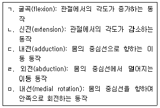
- ㄱ, ㄴ
- ㄴ, ㄷ
- ㄴ, ㄷ, ㅁ
- ㄷ, ㄹ, ㅁ
- ㄱ, ㄴ, ㄷ, ㄹ, ㅁ
(정답률: 알수없음)
47. 재해의 직접원인 중 불안전한 행동에 해당하지 않는 것은?
- 안전장치의 부적합
- 위험장소 접근
- 개인보호구의 잘못 착용
- 불안전한 속도 조작
- 감독 및 연락 불충분
(정답률: 알수없음)
48. 힐(A. Hill)이 주장한 인과 관계를 결정하는 기준에 관한 설명으로 옳지 않은 것은?
- 어떤 원인에 대한 노출과 특정 질병 발생 간에 관련성이 보이지만, 다른 질병과의 연관성도 함께 관찰된다면 인과 관계의 가능성은 작아진다.
- 원인에 대한 노출이 질병 발생 시점보다 시간적으로 앞설 때 인과 관계의 가능성이 커진다.
- 의심되는 원인에 노출되어 질병이 발생하는 기전에 대해 기존 지식이 아닌 새로운 이론으로 해석될 때 인과 관계의 가능성이 커진다.
- 원인에 대한 노출 정도가 커질수록 질병 발생 확률도 높아지는 용량-반응 관계가 나타날 경우에 인과 관계의 가능성이 커진다.
- 연관성의 강도가 클수록 인과 관계의 가능성이 커진다.
(정답률: 알수없음)
49. 유해인자별 건강관리에 관한 설명으로 옳지 않은 것은?
- 도장작업자는 유기화합물에 의한 급성중독, 접촉성 피부염 등에 대해 관리하여야한다.
- 진동작업자의 경우 정기적인 특수건강진단이 필요하다.
- 금속가공유 취급자는 폐기능의 변화, 피부질환 등에 대해 관리하여야 한다.
- “사후관리 조치”란 사업주가 건강관리 실시결과에 따른 작업장소 변경, 작업전환, 건강상담, 근무 중 치료 등 근로자의 건강관리를 위하여 실시하는 조치를 말한다.
- 전(前) 사업장에서 황산에 대한 건강진단을 받고 6개월이 지난 작업자의 경우 배치전건강진단 실시를 면제할 수 있다.
(정답률: 알수없음)
50. 산업안전보건법 시행규칙 중 납에 대한 특수건강진단 시 제2차 검사항목에 해당하는 생물학적 노출지표를 모두 고른 것은?
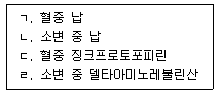
- ㄱ
- ㄴ
- ㄱ, ㄷ
- ㄴ, ㄷ, ㄹ
- ㄱ, ㄴ, ㄷ, ㄹ
(정답률: 알수없음)
3과목: 기업진단 · 지도
51. 균형성과표(BSC: Balanced Score Card)에서 조직의 성과를 평가하는 관점이 아닌 것은?
- 재무 관점
- 고객 관점
- 내부 프로세스 관점
- 학습과 성장 관점
- 공정성 관점
(정답률: 알수없음)
52. 노사관계에서 숍제도(shop system)를 기본적인 형태와 변형적인 형태로 구분할 때, 기본적인 형태를 모두 고른 것은?
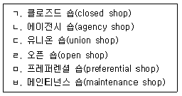
- ㄱ, ㄴ, ㄷ
- ㄱ, ㄷ, ㄹ
- ㄱ, ㄷ, ㅂ
- ㄴ, ㄹ, ㅁ
- ㄴ, ㅁ, ㅂ
(정답률: 알수없음)
53. 홉스테드(G. Hofstede)가 국가 간 문화차이를 비교하는데 이용한 차원이 아닌 것은?
- 성과지향성(performance orientation)
- 개인주의 대 집단주의(individualism vs collectivism)
- 권력격차(power distance)
- 불확실성 회피성향(uncertainty avoidance)
- 남성적 성향 대 여성적 성향(masculinity vs feminity)
(정답률: 알수없음)
54. 레윈(K. Lewin)의 조직변화의 과정으로 옳은 것은?
- 점검(checking) - 비전(vision) 제시 - 교육(education) - 안정(stability)
- 구조적 변화 - 기술적 변화 - 생각의 변화
- 진단(diagnosis) - 전환(transformation) - 적응(adaptation) - 유지(maintenance)
- 해빙(unfreezing) - 변화(changing) - 재동결(refreezing)
- 필요성 인식 - 전략수립 - 실행 - 해결 - 정착
(정답률: 알수없음)
55. 하우스(R. House)의 경로-목표 이론(path-goal theory)에서 제시되는 리더십 유형이 아닌 것은?
- 지시적 리더십(directive leadership)
- 지원적 리더십(supportive leadership)
- 참여적 리더십(participative leadership)
- 성취지향적 리더십(achievement-oriented leadership)
- 거래적 리더십(transactional leadership)
(정답률: 알수없음)
56. 재고관리에 관한 설명으로 옳은 것은?
- 재고비용은 재고유지비용과 재고부족비용의 합이다.
- 일반적으로 재고는 많이 비축할수록 좋다.
- 경제적주문량(EOQ) 모형에서 재고유지비용은 주문량에 비례한다.
- 1회 주문량을 Q라고 할 때, 평균재고는 Q/3이다.
- 경제적주문량(EOQ) 모형에서 발주량에 따른 총 재고비용선은 역U자 모양이다.
(정답률: 알수없음)
57. 품질경영에 관한 설명으로 옳은 것은?
- 품질비용은 실패비용과 예방비용의 합이다.
- R-관리도는 검사한 물품을 양품과 불량품으로 나누어서 불량의 비율을 관리하고자 할 때 이용한다.
- ABC품질관리는 품질규격에 적합한 제품을 만들어 내기 위해 통계적 방법에 의해 공정을 관리하는 기법이다.
- TQM은 고객의 입장에서 품질을 정의하고 조직 내의 모든 구성원이 참여하여 품질을 향상하고자 하는 기법이다.
- 6시그마운동은 최초로 미국의 애플이 혁신적인 품질개선을 목적으로 개발한 기업경영전략이다.
(정답률: 알수없음)
58. JIT(Just In Time) 생산시스템의 특징에 해당하지 않는 것은?
- 부품 및 공정의 표준화
- 공급자와의 원활한 협력
- 채찍효과 발생
- 다기능 작업자 필요
- 칸반시스템 활용
(정답률: 알수없음)
59. 1년 중 여름에 아이스크림의 매출이 증가하고 겨울에는 스키 장비의 매출이 증가한다고 할 때, 이를 설명하는 변동은?
- 추세변동
- 공간변동
- 순환변동
- 계절변동
- 우연변동
(정답률: 알수없음)
60. 업무를 수행 중인 종업원들로부터 현재의 생산성 자료를 수집한 후 즉시 그들에게 검사를 실시하여 그 검사 점수들과 생산성 자료들과의 상관을 구하는 타당도는?
- 내적 타당도(internal validity)
- 동시 타당도(concurrent validity)
- 예측 타당도(predictive validity)
- 내용 타당도(content validity)
- 안면 타당도(face validity)
(정답률: 알수없음)
61. 직무분석에 관한 설명으로 옳지 않은 것은?
- 직무분석가는 여러 직무 간의 관계에 관하여 정확한 정보를 주는 정보 제공자이다.
- 작업자 중심 직무분석은 직무를 성공적으로 수행하는데 요구되는 인적 속성들을 조사함으로써 직무를 파악하는 접근 방법이다.
- 작업자 중심 직무분석에서 인적 속성은 지식, 기술, 능력, 기타 특성 등으로 분류할 수 있다.
- 과업 중심 직무분석 방법의 대표적인 예는 직위분석질문지(Position Analysis Questionnaire)이다.
- 직무분석의 정보 수집 방법 중 설문조사는 효율적이며 비용이 적게 드는 장점이 있다.
(정답률: 알수없음)
62. 리전(J. Reason)의 불안전행동에 관한 설명으로 옳지 않은 것은?
- 위반(violation)은 고의성 있는 위험한 행동이다.
- 실책(mistake)은 부적절한 의도(계획)에서 발생한다.
- 실수(slip)는 의도하지 않았고 어떤 기준에 맞지 않는 것이다.
- 착오(lapse)는 의도를 가지고 실행한 행동이다.
- 불안전행동 중에는 실제 행동으로 나타나지 않고 당사자만 인식하는 것도 있다.
(정답률: 알수없음)
63. 작업동기 이론에 관한 설명으로 옳은 것을 모두 고른 것은?
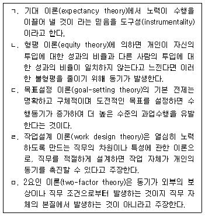
- ㄱ, ㄴ, ㅁ
- ㄱ, ㄷ, ㄹ
- ㄴ, ㄷ, ㄹ
- ㄴ, ㄹ, ㅁ
- ㄷ, ㄹ, ㅁ
(정답률: 알수없음)
64. 직업 스트레스 모델에 관한 설명으로 옳지 않은 것은?
- 노력-보상 불균형 모델(Effort-Reward Imbalance Model)은 직장에서 제공하는 보상이 종업원의 노력에 비례하지 않을 때 종업원이 많은 스트레스를 느낀다고 주장한다.
- 요구-통제 모델(Demands-Control Model)에 따르면 작업장에서 스트레스가 가장 높은 상황은 종업원에 대한 업무 요구가 높고 동시에 종업원 자신이 가지는 업무 통제력이 많을 때이다.
- 직무요구-자원 모델(Job Demands-Resources Model)은 업무량 이외에도 다양한 요구가 존재한다는 점을 인식하고, 이러한 다양한 요구가 종업원의 안녕과 동기에 미치는 영향을 연구한다.
- 자원보존 모델(Conservation of Resources Model)은 자원의 실제적 손실 또는 손실의 위협이 종업원에게 스트레스를 경험하게 한다고 주장한다.
- 사람-환경 적합 모델(Person-Environment Fit Model)에 의하면 종업원은 개인과 환경 간의 적합도가 낮은 업무 환경을 스트레스원(stressor)으로 지각한다.
(정답률: 알수없음)
65. 산업재해의 인적 요인이라고 볼 수 없는 것은?
- 작업 환경
- 불안전행동
- 인간 오류
- 사고 경향성
- 직무 스트레스
(정답률: 알수없음)
66. 인간의 일반적인 정보처리 순서에서 행동실행 바로 전 단계에 해당하는 것은?
- 자극
- 지각
- 주의
- 감각
- 결정
(정답률: 알수없음)
67. 조명의 측정단위에 관한 설명으로 옳은 것을 모두 고른 것은?
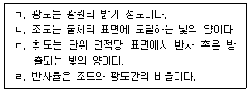
- ㄱ, ㄷ
- ㄴ, ㄹ
- ㄱ, ㄴ, ㄷ
- ㄱ, ㄷ, ㄹ
- ㄱ, ㄴ, ㄷ, ㄹ
(정답률: 알수없음)
68. 아래의 그림에서 a에서 b까지의 선분 길이와 c에서 d까지의 선분 길이가 다르게 보이지만 실제로는 같다. 이러한 현상을 나타내는 용어는?
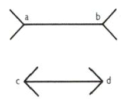
- 포겐도르프(Poggendorf) 착시현상
- 뮬러-라이어(Muller-Lyer) 착시현상
- 폰조(Ponzo) 착시현상
- 죌너(Zollner) 착시현상
- 티체너(Titchener) 착시현상
(정답률: 알수없음)
69. 다음에서 설명하고 있는 기계설비의 위험점은?
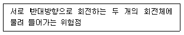
- 협착점
- 절단점
- 끼임점
- 물림점
- 회전 말림점
(정답률: 알수없음)
70. 제조물 책임법상 결함에 해당하는 것을 모두 고른 것은?
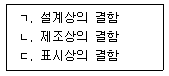
- ㄱ
- ㄴ
- ㄱ, ㄷ
- ㄴ, ㄷ
- ㄱ, ㄴ, ㄷ
(정답률: 알수없음)
71. 개인보호구의 사용 및 관리에 관한 기술지침에서 유해인자 취급 작업별 보호구 중 작업명과 보호구의 연결로 옳지 않은 것은?
- 석면 해체ㆍ제거 작업 - 송기마스크
- 환자의 가검물 처리 작업 - 보호마스크
- 산소결핍 위험이 있는 밀폐공간 작업 - 방독마스크
- 허가 대상 유해물질을 제조ㆍ사용하는 작업 - 방독마스크
- 혈액이 분출되거나 분무될 가능성이 있는 작업 - 보호마스크
(정답률: 알수없음)
72. 사업장 위험성평가에 관한 지침에서 명시하고 있는 유해ㆍ위험요인 파악의 방법이 아닌 것은? (단, 그 밖에 사업장의 특성에 적합한 방법은 고려하지 않음)
- 청취조사에 의한 방법
- 경영실적에 의한 방법
- 안전보건 자료에 의한 방법
- 사업장 순회점검에 의한 방법
- 안전보건 체크리스트에 의한 방법
(정답률: 알수없음)
73. 사업장 위험성평가에 관한 지침에 따른 사업장 위험성평가 실시에 관한 내용으로 옳은 것을 모두 고른 것은?
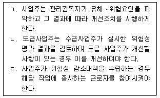
- ㄱ
- ㄴ
- ㄱ, ㄷ
- ㄴ, ㄷ
- ㄱ, ㄴ, ㄷ
(정답률: 알수없음)
74. 국내 어느 사업장에서 경상이 15건 발생하였다. 이때 버드(Bird)의 재해구성 비율을 적용한다면 무상해사고는 몇 건이 발생할 수 있는가?
- 29
- 45
- 290
- 450
- 900
(정답률: 알수없음)
75. 재해 조사 과정의 절차를 순서대로 옳게 나열한 것은?
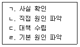
- ㄱ → ㄴ → ㄹ → ㄷ
- ㄱ → ㄹ → ㄴ → ㄷ
- ㄴ → ㄱ → ㄹ → ㄷ
- ㄷ → ㄱ → ㄹ → ㄴ
- ㄹ → ㄴ → ㄷ → ㄱ
(정답률: 알수없음)
건설업에서는 도급인이 안전보건관리책임자를 지정하여 안전보건계획서를 작성하고, 이를 기반으로 안전ㆍ보건관리를 실시해야 한다. 따라서 도급사업의 정기 안전ㆍ보건 점검을 분기에 1회 이상 실시하는 것은 아니다.